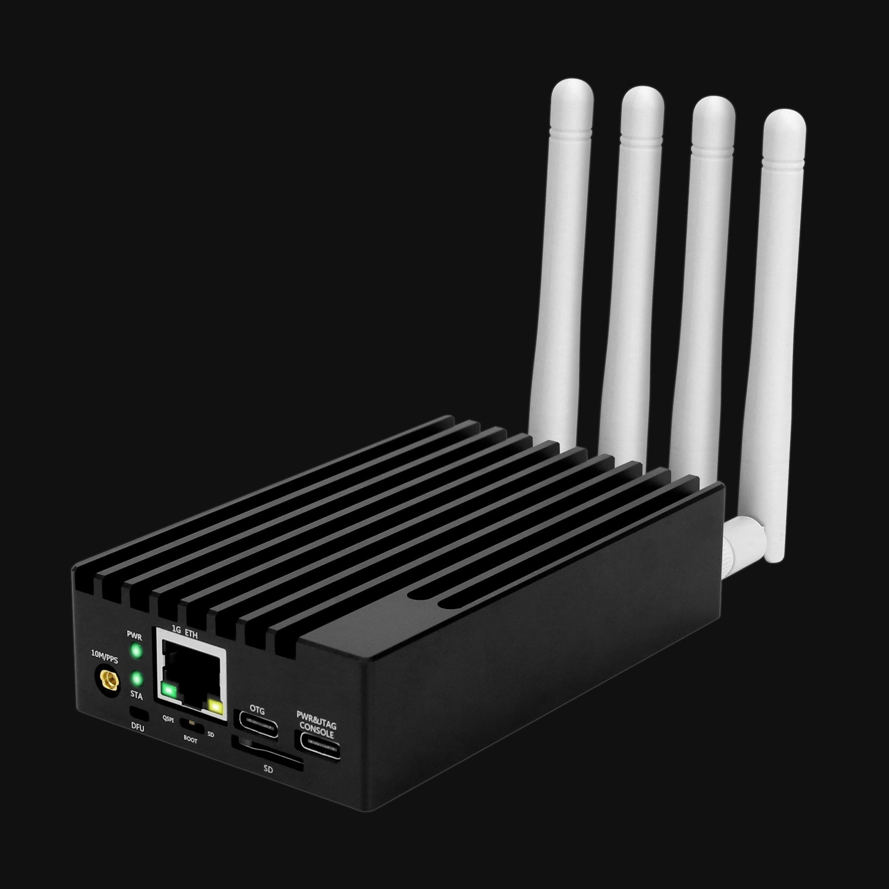
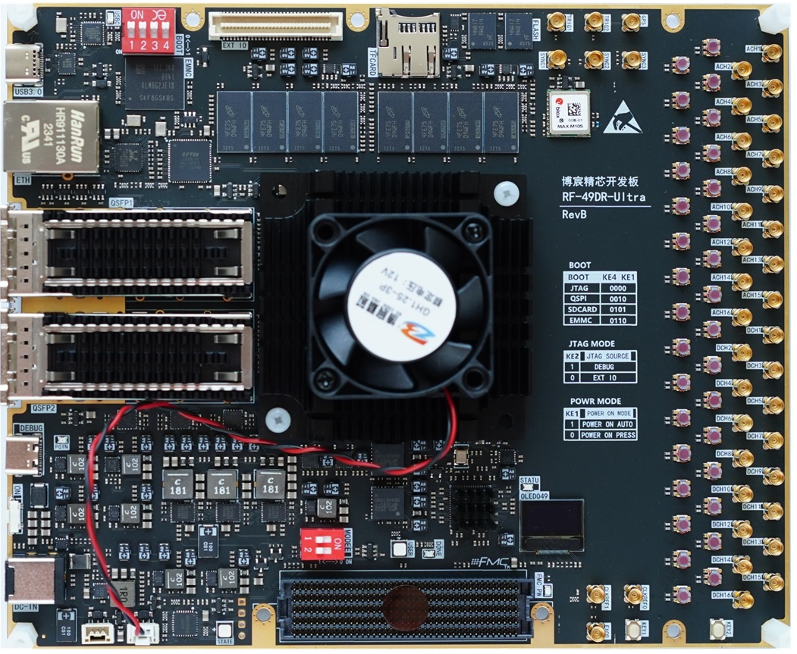

In-house · AI-assisted engineering platform
Orion is an AI-assisted engineering platform for designing, simulating, verifying and implementing FPGA-based communication systems. What started as a separate in-house project has grown into our main working platform for implementing other projects — and today it is actively developed as Mintaka's internal engineering platform.
Orion connects algorithm exploration, MATLAB and C++ modeling, RTL verification, FPGA synthesis and measured hardware tests in one repeatable workflow, so the mathematical model and the deployed implementation always stay connected. Orion can also operate with GNU Radio as an SDR transmitter or receiver for communication-system experiments.
Three layers working as one platform — a verified IP library, representative laboratory hardware and an AI engineering copilot.
FPGA-based communication system library
SDR-LIB was Mintaka's first major in-house engineering project. Today, it is a core library we use across FPGA, SDR and SatCom engineering work to build communication systems from synthesizable, configurable DSP and communication IP.
Each functional block pairs a synthesizable RTL implementation with MATLAB and C++ reference models, fixed-point configuration, tests, documentation and synthesis results. Orion builds on this foundation to connect algorithm exploration, RTL verification, FPGA synthesis, system integration and measured hardware tests.

02Hardware Layer · Representative Laboratory Hardware
Orion supports the development and testing of DSP algorithms for embedded communication systems. The workflow connects algorithm exploration, modeling, RTL verification, FPGA synthesis, embedded application development and hardware-in-the-loop evaluation.
Compact SDR hardware provides an RF target for testing signal-processing chains, channel scenarios and receiver algorithms in realistic conditions. This makes it possible to move from simulated IQ data to repeatable over-the-air and bench-level experiments.
For Zynq-based systems, Orion also supports embedded application development alongside FPGA logic. We use Zephyr RTOS for real-time embedded software, including system control, peripheral interfaces, telemetry and communication functions that work with the FPGA processing pipeline.

03AI Engineering Copilot
Copernicus is Mintaka's hands-on engineering partner for FPGA, RTL, DSP, SDR, SoC FPGA, verification, timing, tool-flow and embedded co-design work. It helps turn a system goal into concrete specifications, architecture, module boundaries, clock and reset domains, and an implementation plan.
It supports synthesizable RTL, verification plans, assertions, reference models, regressions, constraints, timing analysis, resource trade-offs and bring-up preparation. Copernicus operates as an engineering layer alongside the team — not as a generic chatbot or a replacement for engineers.
Orion is Mintaka's in-house research platform — a powerful environment for analyzing and validating communication algorithms that are then implemented in FPGA. Already in active use, it keeps growing as new algorithms and capabilities are added.
Filters, CIC and half-band stages, NCO/DDS, FFT/IFFT, AGC, adaptive filters and equalizers.
Modulation, synchronization, FEC and complete transmit/receive chains for digital links.
AWGN, Doppler, fading, phase noise, multipath, IQ imbalance and sample-rate offset models.
Automated unit and randomized tests, RTL-to-reference comparison, regressions and system BER/EVM checks.
Resource, timing, latency and throughput data across FPGA targets and implementation configurations.
Burst receivers, Doppler compensation, adaptive coding, multi-channel processing and link simulation.
Work with us